Представьте, что вы журналист, и пишете статью по-английски на очень важную тему. Вы ответственно подходите к своему заданию, поэтому в своей статье должны ответить на все интересующие читателя вопросы: кто, где, когда, куда, почему и так далее. Эти вопросы еще называют специальными — о них мы сегодня и поговорим.
Что такое специальные вопросы
В английские специальные вопросы задают, чтобы выяснить какую-то конкретную, детальную информацию о человеке, предмете или явлении. Хотите уточнить дату следующей встречи? Используете специальный вопрос. Необходимо выяснить имя человека, который вам прислал цветы? Задаете специальный вопрос. Хочется заказать пиццу на 6 вечера? Воспользуйтесь специальным вопросом.
В английском присутствуют и другие виды вопросов — всего их четыре типа. Однако общие и специальные вопросы в английском языке являются самыми часто используемыми.
Если специальные вопросы мы с вами будем разглядывать под микроскопом в этой статье, то про общие стоит сказать, что их задают ко всему предложению и на них можно дать краткий ответ «да» или «нет».
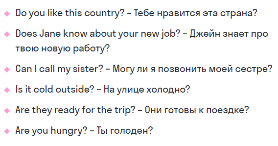Какие бывают вопросительные слова
Категорию специальных вопросов еще называют wh-questions, так как большинство вопросительных слов будет начинаться именно с сочетания этих двух букв:
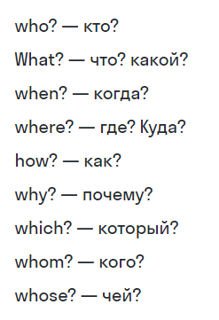Примеры специальных вопросов в английском языке
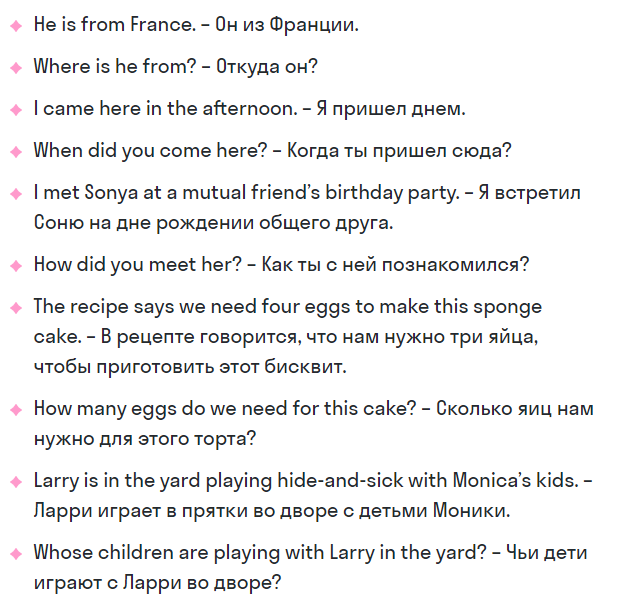Вопросительное слово здесь выступает полноценным членом предложения, и поэтому оно может играть роль как подлежащего, так и дополнения, определения или обстоятельства. Информация, которую вам хочется узнать, здесь играет главную роль.
Вопрос к подлежащему
Этот тип вопроса отличается от всех остальных, так как при его построении не используются вспомогательные глаголы. Все, что нужно сделать — заменить подлежащее на who или what и добавить вопросительную интонацию.
Схема построения вопроса к подлежащему:
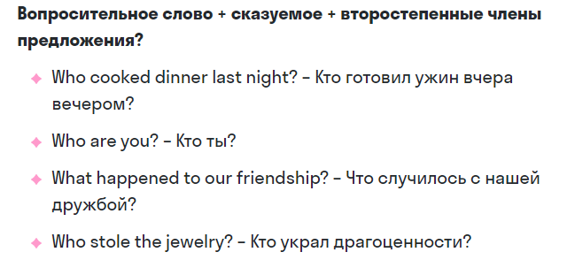Вопрос к дополнению
Схема построения вопроса к дополнению:
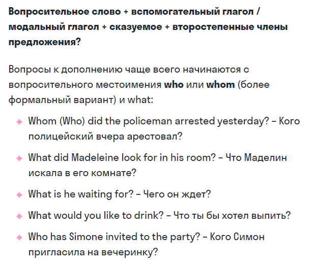Вопрос к определению
Схема построения вопроса к определению:
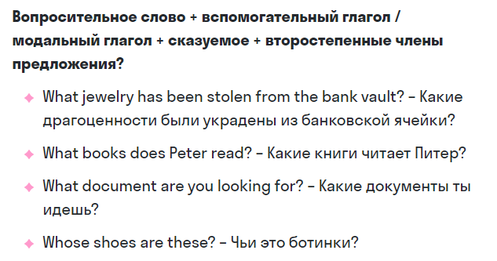
Вопрос к обстоятельству
Различают следующие типы обстоятельств: времени (вопросы с when), места (вопросы с where), причины (вопросы с why) и образа действия (вопросы с how).
Схема построения вопроса к обстоятельству:
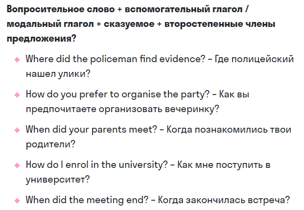Дополнительные специальные вопросы
В дополнение к основным special questions мы можем также использовать вопросы с how «как?»
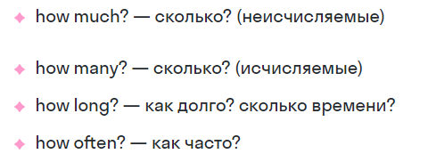Обратите внимание, что перед тем, как задавать вопросы с how many / how much нужно решить, о каком существительном идет речь: исчисляемом или неисчисляемом.
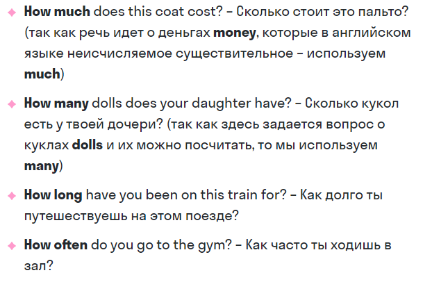Как задать специальный вопрос на английском
Итак, мы познакомились со всеми специальными вопросами. Теперь давайте приступим к самому главному: как построить такой вопрос?
Задаваться эти вопросы будут по следующей схеме:
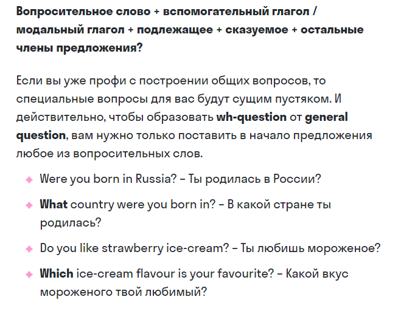Отрицательная форма специальных вопросов
Велосипед изобретать не нужно: чтобы сделать из обычного специального вопроса отрицательный, достаточно просто подставить частицу not после подлежащего. Вот как будет выглядеть такое предложение:
В разговорном английском такое раздельное написание глагола и частицы встречается крайне редко. Даже текстовый редактор будет ругаться и просить вас исправить предложение. Наиболее популярный вариант — сокращать их написание: don’t, didn’t, aren't и так далее.
Как отвечать на специальные вопросы
Так как в самом вопросе вас спрашивают определенную и специфическую информацию, то мы вам не можем дать схемы ответов на wh-questions. Что мы можем вам подсказать, так это то, что отвечать нужно, употребляя то же время, что используется в вопросе.
Ответ может быть как развернутым, так и кратким.
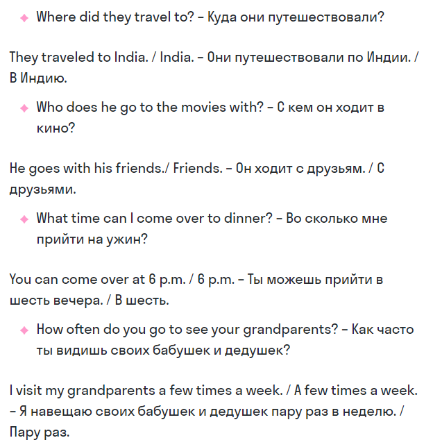